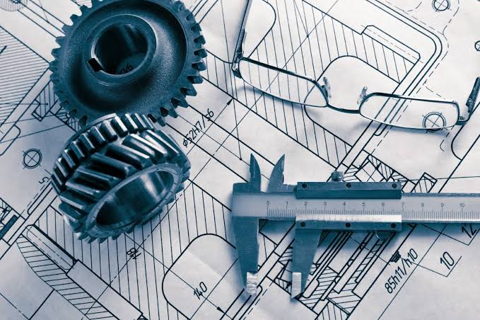

Projects
While school and extracurriculars remain a important part of a student's life, it's important for them to remember there's more outside school, most people excel outside school. as demonstrated by people like Thomas Edison—who was labelled a slow learner and "too stupid to learn" by early teachers, he went on to hold over 1,000 patents and revolutionized modern technology—or Steve Jobs—who was often uninspired by traditional schooling and became a college dropout, he later co-founded Apple and transformed global consumer technology—success is not only born through academic excellence.
Projects are a great part of what make students stand out, it proves that students can think for themselves and create solutions for problems outside of school—may it be lack of entertainment, environmentalism, violence prevention, or others, they're still problems that students find a solution for. I've done a few projects of my own.